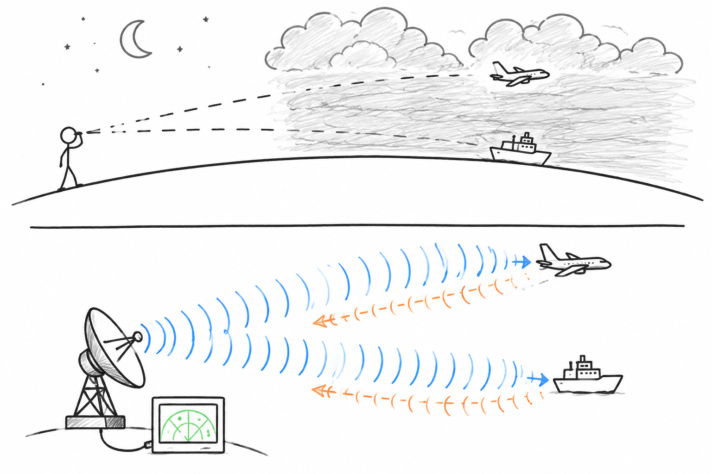
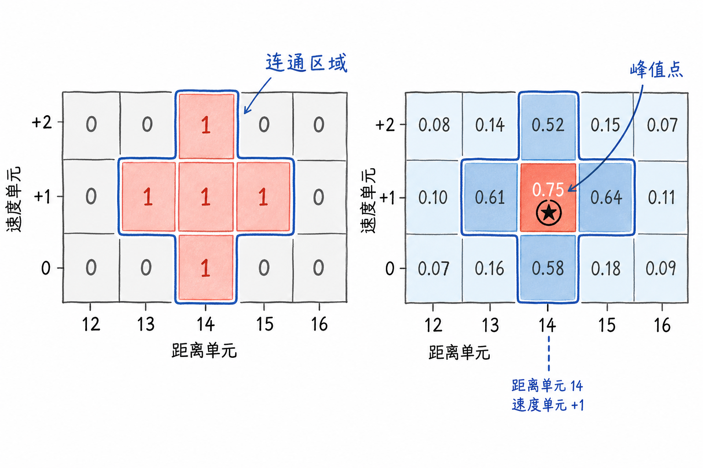
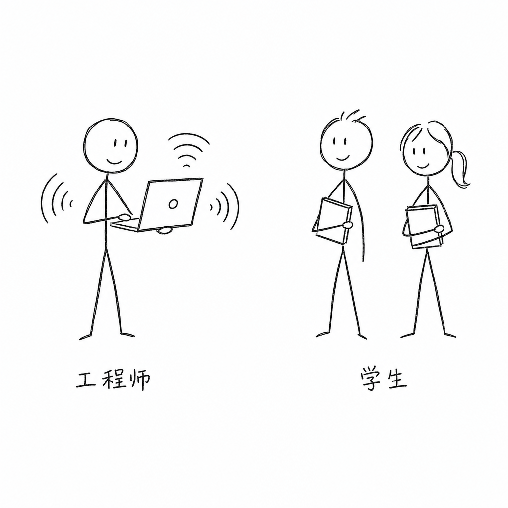

Chapters


Interactive Visualizations
Understand complex radar concepts through dynamic, interactive charts and animations
Clear Illustrations
High-quality diagrams for intuitive understanding



Who This Is For
Whether you're a student just starting with radar systems, an engineer transitioning into signal processing, or a professional looking to refresh your knowledge, this tutorial provides a structured path from fundamentals to practical implementation. Each chapter builds progressively, with working code examples and real-world applications.

If you find this tutorial helpful, please consider supporting it.
Contributed code: frequency-modulated pulse compression, false alarm rate simulation.
Contributed charts: MCW waveform, matched filter output.
This work is maintained by volunteers.